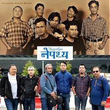
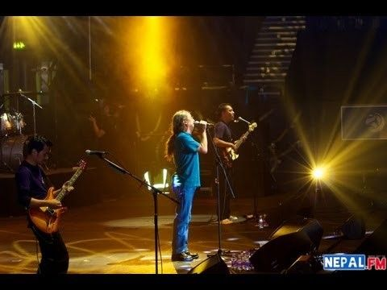
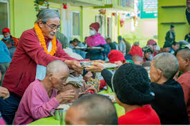

From 1990 to now
Formed in 1990 by Deepak Rana (now a Chopper pilot),
Bhim
Poon (now settled in Hong Kong), and Amrit Gurung,
Nepathya has, in these last several decades,
providing a
platform to many musicians. It has seen 21 new faces
come and go, but the name Nepathya and its
popularity
still consistently exist. Nepathya has been a
platform
for talented musicians in Nepal.

Concerts
Upcoming concerts nearby
Nepathya Live in Birtamode, 2024
Date: ३० चैत्र २०८०, शुक्रवार (April 22, Friday)
Venue: Domalal Rajbanshi Rangashala, Birtabazar
Gates open at 4:30 PM.
न्युपी थर्पा छोलिङ्ग गुम्बा सहयोगार्थ - Nepathya Live
in
Ilam
Date: चैत्र ३ २०८०, शनिवार (May 26, Saturday)
Venue: Karfok Vidhya Mandir Maidan, Suryodaya-12,
Ilam
करफोक विद्यामन्दिर मा. वि, सूर्योदय-१२ इलाम
Gates open at 4 PM.

Collaboration
Efforts to the society
‘मानवताका लागि संगीत' नामको सांगीतिक अभियान यात्रामा
नेपथ्यले हालै मात्र एक महिना लामो देशब्यापी यात्रा
सफलता
पुर्वक सम्पन्न गरेको थियो ।
त्यतिबेला मुलुकभर सडक आश्रितहरुको क्षेत्रमा सेवारत
‘मानवसेवा आश्रम’सँगको सहकार्यसहित सातै प्रदेशका दस
सहरमा
कार्यक्रम प्रस्तुत गरिएका थिए ।
अपेक्षाकृत सफलता सहित सम्पन्न सो यात्राले संगीतको
माध्यमबाट मानवता प्रबर्धन गर्न सफल भएको जस संकलन
गरेको
थियो ।
"सोहि यात्राको प्रतिक्रियाबाट प्रेरित भएर हामीले सन
२०२३
भरि हाम्रा सबै प्रस्तुतीहरुलाइ ‘मानवताका लागि संगीत’
को
नारा सहित मानवता प्रबर्धन
अभियानको श्रृंखलाको रुपमा प्रस्तुत गर्ने विचार गरेका
छौँ" नेपथ्यका अगुवा अमृत गुरुङ भन्छन् ।